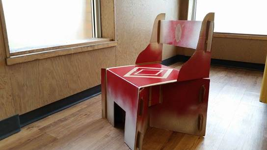
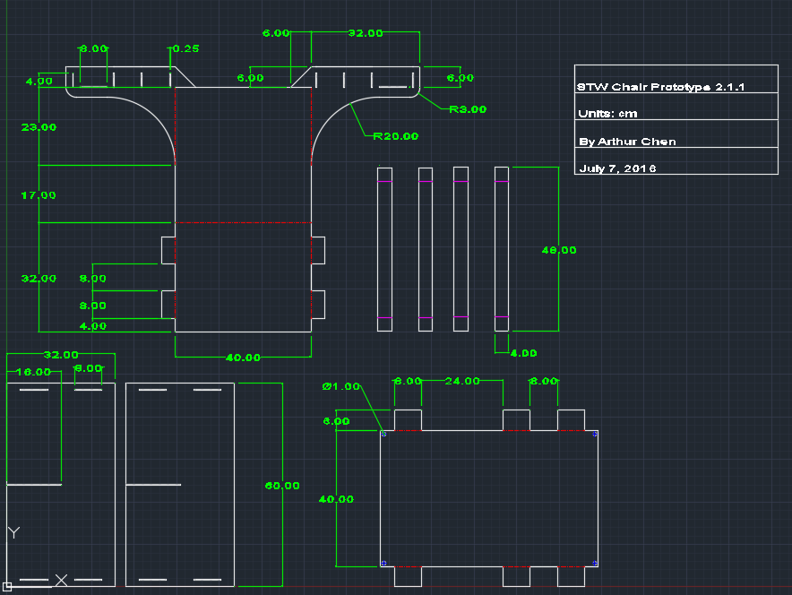
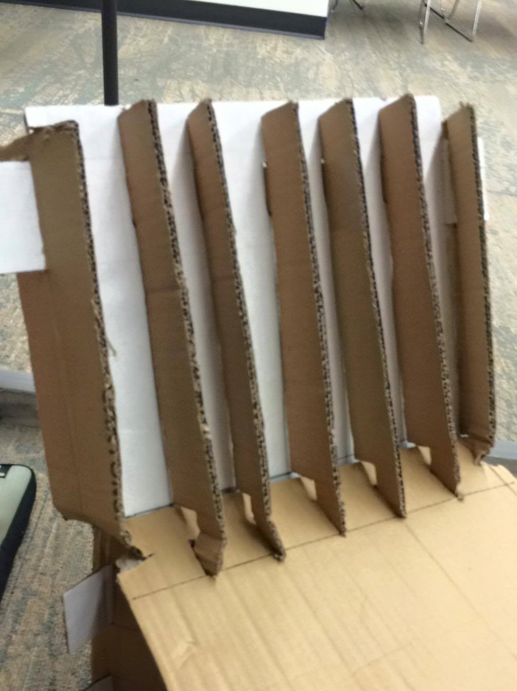
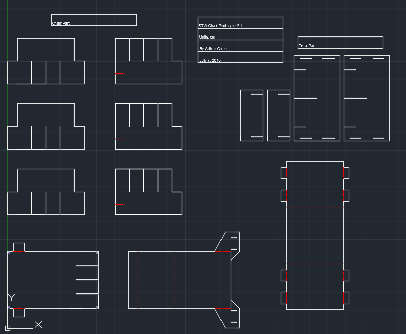
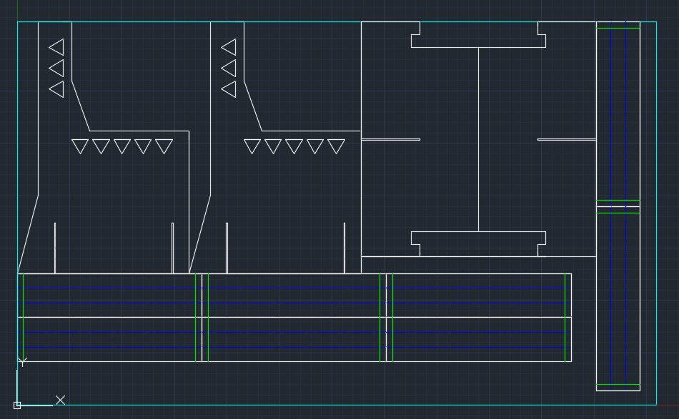
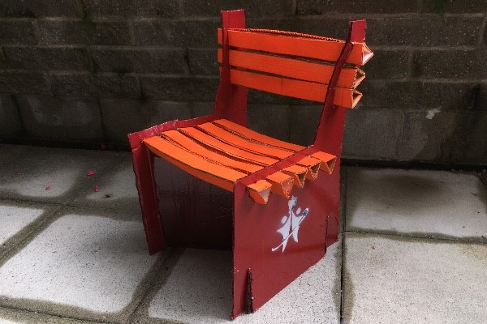

I am currently working with two friends to develop a portable, cost-efficient cardboard chair for schoolchildren at a learning centre in Bulawayo, Zimbabwe. Originally a class project, we later decided to make a product that could help real people. Our goal is to maximize durability and comfort while minimizing the weight and materials cost of the chair.
From a non-technical standpoint, this project has been a great opportunity to learn stakeholder management; in order to ensure we are meeting the needs of our end users, we neeed to clearly communicate our progress and solicit feedback.
|  |
STW 1.0
This is the original design from our class project, which received the highest score among ~150 teams of students.
Specifications:
- Supports over 300kg, tested with sandbags - Uses 30ft^2 of cardboard, weighing less than 1kg - Fully assemblable and disassemblable; no adhesives used. |
|  |
STW 2.1.1 AutoCAD Drawing (Drafter: Myself)
With our first major design upgrade, we improved the back support. My take on the problem was to add horizontal rails, slotted through the stiles of the chair.
Cardstock prototypes verified that this was feasible, but not the best solution the backrest would still warp to some extent. |
|  |
STW 2.1.2 Test
We decided to build a full-scale prototype of a riskier design, suggested by a team member. Design philosophy: use vertical rails to provide both back support and a comfortable slant to rest on. However, our tests demonstrated two problems: 1. The back supports were easily damaged or dislocated, since they had low thickness. 2. Sitting in the chair for more than an hour would produce pain in the buttocks. As pictured, the bottoms of the vertical rails were crumpled after a load was applied. |
|  |
STW 2.2.1 AutoCAD Drawing (Drafter: Myself)
Design philosophy: 1. Create a lattice base to distribute a person's load when sitting on our chair. 2. Shortened the backrest to see if it would be sturdier. 3. As a team, we also decided to try prototyping a small desk -- essentially, STW 1.0 without a backrest. Although the cardstock prototype for this design showed promise, it featured too many different parts. This could make it complicated for our end-users to assemble and disassemble. |
|  |
STW 2.3 AutoCAD Drawing (Drafter: Myself)
One of our team mates was able to pitch a design that addressed all of our previous two problems: a sturdy back, comfortable seat. Not only that, but the design is also quite simple to build and assemble: it only features 3 unique parts! It is interesting to note how our design has become progressively simpler through iterations. Design philosophy: 1. Fold triangular prisms to serve as cushions and supports. |
|  |
STW 2.3 Beta Prototype
Pictured is our final chair design, built by hand. Since shipping the chairs abroad is expensive, we intend to laser cut stencils so that our end-users can build more chairs for themselves on-site. We plan to send the first five chairs to our partner learning centre by Sept. 30. |